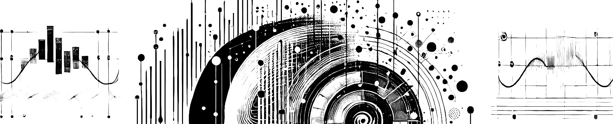

Kleanthis Avramidis
I come from Athens, Greece. I am a PhD Student in Computer Science at the University of Southern California, where I work on Human-Centered Machine Intelligence, under the supervision of Prof. Shrikanth Narayanan. I am using machine learning and biomedical signal processing methods that could help augment human well-being. I am particularly interested in ways to model cognitive and physiological responses to naturalistic stimuli. Feel free to get in touch:
Aug 6, 2025
Our work on modeling child-parent interactions with ubiquitous sensors is now published at npj Mental Health Research!
Jun 30, 2025
Wrapping up a great month visiting the Technical University of Munich and working under the guidance of Prof. Björn Schuller.
Jun 15, 2025
Just received a grant from the USC Center for Music, Brain, and Society to investigate neural entrainment to music!
Apr 6, 2025
Co-organized the Workshop on Brain-Body-Behavior Signal Dynamics at ICASSP 2025 in Hyderabad, India.
Mar 4, 2025
Excited to kick off a new collaboration with the Chair of Health Informatics at the Technical University of Munich. We will be working on EMG and silent paralinguistics, including both data collection and machine learning analysis.